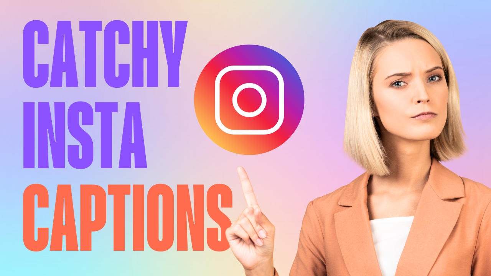

How to Write Catchy Instagram Captions That Get More Likes
On Instagram, your photo or video might grab attention, but it’s often the caption that keeps people engaged. A great caption can spark emotions, inspire conversations, and most importantly, get you more likes and comments. In 2025, with Instagram’s algorithm prioritizing engagement, writing catchy Instagram captions is more important than ever.
Why Instagram Captions Matter
Your caption is your voice. It gives context to your content, shows your personality, and encourages interaction. The right caption can:
- Boost likes and comments
- Increase shares and saves
- Build stronger connections with your followers
- Improve your chances of showing up on the Explore page
Tips for Writing Catchy Instagram Captions
Here are some proven strategies to write captions that stand out:
- Start with a Hook: Grab attention in the first few words so users don’t scroll past.
- Keep It Relatable: Share personal stories, humor, or experiences that resonate.
- Use Emojis: Break up text and add a fun, visual touch.
- Add a Call-to-Action (CTA): Encourage followers to comment, share, or tag a friend.
- Leverage Hashtags: Use relevant hashtags to reach a wider audience.
- Match the Mood: Ensure your caption aligns with the tone of your photo or video.
Examples of Catchy Instagram Captions
Here are some ready-to-use ideas:
- “Good vibes only ✨ Who’s with me?”
- “When in doubt, take another selfie 😎”
- “Coffee first. Conquer the world later ☕🌍”
- “Smiles are contagious — pass it on 💫”
- “Tag someone who needs this reminder today ❤️”
Final Thoughts
Writing catchy Instagram captions doesn’t have to be difficult. Focus on connecting with your audience, keeping things authentic, and encouraging engagement. Remember — the algorithm rewards meaningful interactions, so the more you engage your followers with great captions, the more visibility you’ll get. Start experimenting today and watch your likes and comments grow!